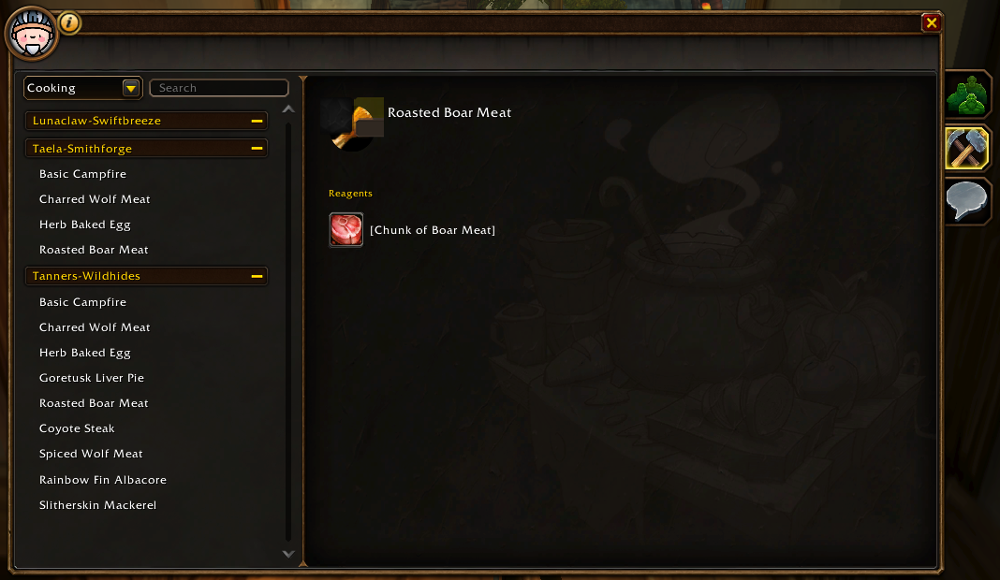
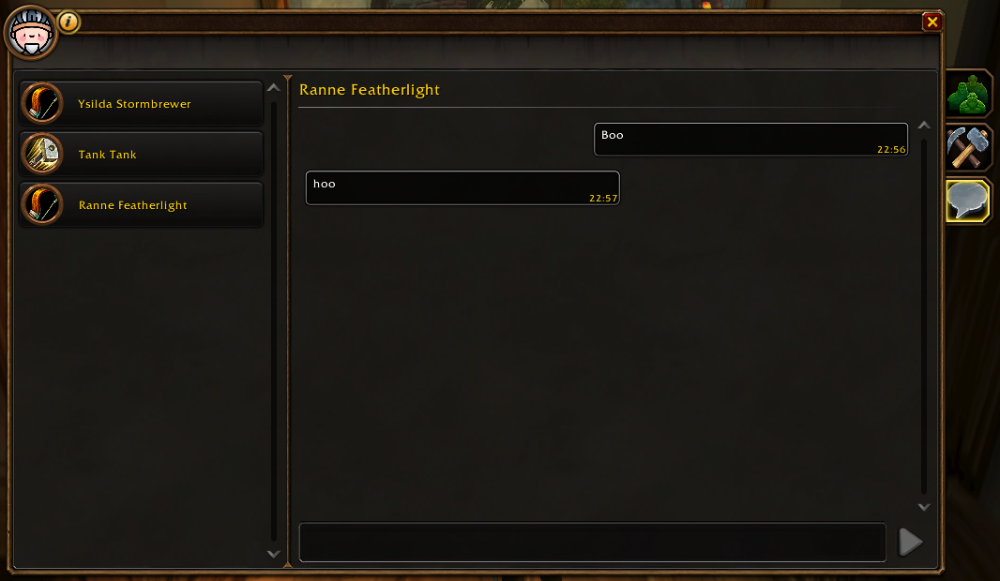

Character Summary
See all your characters in one place, including class, level and XP, location, gold, last login (or login duration) and professions.

Whether you're setting out with your first character or returning to Azeroth, Forever helps you keep track of your characters and their adventures.
Character Summary
See all your characters in one place, including class, level and XP, location, gold, last login (or login duration) and professions.
Professions
Track your characters professions, search and filter for specific recipes.

Whispers
Manage your whispers in one clean view.
